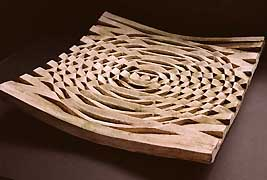
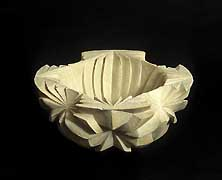
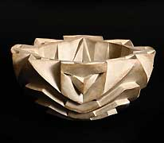
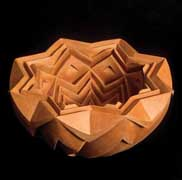
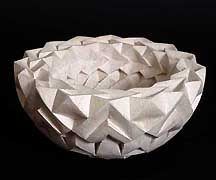
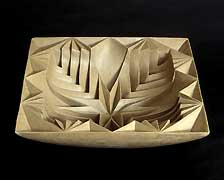
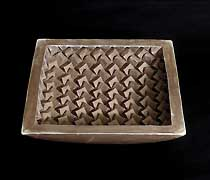

|
Halima Cassell
British ceramist

Pakistani-born
British ceramist Halima
Cassell graduated from the University of Lancashire with
a BA in 1997 and an MA in 3D Design in 2002. Her deeply carved,
large-scale, contoured sculptural vessels are made from a heavily
grogged, unglazed clay and are inspired by Islamic and African art
and architectural geometry. Cassell utilises dramatic lines and
angles in an attempt to manifest the universal language of numbers.
Her awards include an East Lancashire Creativity Development Award
and a Craft Council Development Award, both in 2005.
Artist Statement
Where does my pre-occupation with carved form spring from? What
are the roots of my fascination with carved space? These all-embracing
obsessions of bringing into being the poetry of faceted forms are
my creations.
They are buried in layers of forgotten history, like subcutaneous
memories waiting to be plumbed; like the ocean deep they float in
darkness waiting to be revealed by the light. I carve out parts
of my history, an exorcism of thought forms, a compulsion to make
manifest the intangible, transmuting it into something hard and
permanent. Like life everything begins with the energy of a thought.

My forms are energetic expressions of my psyche linking two cultures,
like left and right hemispheres of the brain; logic and reason married
to irrationality in order to formulate a style of working. Like
slightly shifting sands my work refuses to stand still.
I want my work to be on the edge of reason yet speaking with an
eloquence that is understood by the universal consciousness –
altered states yet accessible tectonic plates in dialogue, setting
up tensions, the ‘Ley Lines’ of my world made visible
within the forms and folds of my beloved earth.

Artists in general create their own mood and feeling through the
use of colour, line and texture in their work, I try to do the same
through my pieces but through playfully manipulating the planes
and facets of the pattern, one against the other. This juxtaposition
helps me to create the maximum impact within the overall design.
The most exciting moment for me is when my flat designs become dramatically
transformed when charted over a structure taking on a different
life. The hue of the clay body is crucial because I rarely use glazes,
I solely rely on the piece itself to dramatise the tones and textures
through the effects of light, shadow and rain.
In my early work I was exploring the boundaries of my new found
‘modus operandi’, which was infused with Islamic influences
drawn from heavily carved architecture. This led me to look to other
examples of intricately carved and constructed buildings from all
around the world. In addition, I was inspired by the repetitive
motifs of pattern derived from the influences of African surface
design.

My recent work has been influenced by the structures of past and
contemporary building styles. I was intrigued by internal space
and construction, which are articulated together on the external
surface envelope. These relationships have informed my own work
as I strive to unify not only internal and external forms but also
the parts to the whole. In this respect I am reminded of the Greek
principle of the Golden Section, namely that, ‘the smaller
is to the larger as the larger is to the whole’.
Over the past year, my new work has been conceived as a direct
result of being attentive to observations and comments of visitors
to my work. There appeared to be a distinct pattern of behaviour
of the viewers emerging solely based on gender. In general, women
gravitated towards the spherical forms whereas the square form tended
to elicit more interest from men. Drawing from these observations
my new work consists of the same design elements but with a novel
emphasis on the balance between masculine and feminine forms.
Website: http://www.halimacassell.co.uk
More Featured Artists
More Articles
|
{kind=link}
{kind=link}
{kind=link}
{kind=link}
{kind=link}
{kind=link}
{kind=link}